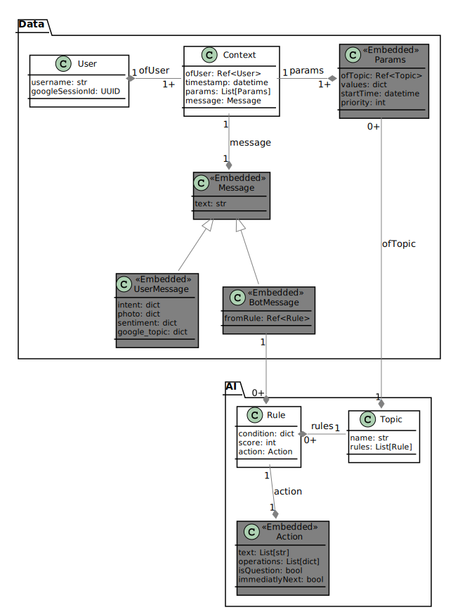

Database structure¶
Rules structure¶
This is an example of condition, in onParam and onMsg only “static” condition are permitted, instead in py is possible to use any valid python expression(during the execution of this “_” contains the list of Params and “m” contains all the information about the user message.
1 2 3 4 5 6 7 8 9 10 11 12 13 14 15 16 17 18 19 20 21 22 23 24 25 | {
"onParam": [
{
"w__ne": "k"
},
{
"d__ne": "prova",
"c__eq": "ciao",
"test1" : {
"a__lt": 1
"b__ge": 2
"k__in": [1,2,3,4]
},
"__has__": ["c"]
"__type__": <topic_id>
}
],
"onMsg": {
"intent": {
"name__in": [<intent_name>, <intent_name2>]
}
}
"py" : "_[0].values['k']!=_[1].values['d'] && _[0].priority < _[1].priority"
}
|
onMsg and onParam use the same type of schema to impose conditions. If an object is None all conditions are evaluated to true, to check that an object is not none is possible to use “__has__”. “__type__” is evalueted to true only when the Params to which is evaluated against has a specified <topic_id>
In action.operations we can then use:
1 2 3 4 5 6 7 8 9 10 11 12 13 14 15 16 17 18 19 20 21 22 23 24 25 | [
{
"op": "exportNames",
"index": 0,
"val": <any valid python expression using _ or m>
"name": "test"
}, /* Writes in _[0].values['test'] = <result of valid python expression> */
{
"op": "exportNames",
"index": 1,
"val": None
"name": "test1"
}, /* Deletes 'test1' field from _[0].values */
{
"op": "popUntil",
"index": 2
}, /* Deletes all Params with priority lower than _[2].priority */
{
"op": "pop"
}, /* Deletes Params on top of stack */
{
"op": "push",
"topic": <id_of_topic>
}, /* Adds topic on top of stack(and last of _) */
]
|